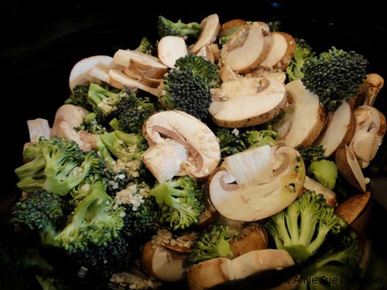

Marinated Broccoli and Mushroom Stir Fry

~ raw, vegan, gluten-free, nut-free ~
Yum yum, double yum! I love marinating veggies! Through the marinating process, the salt and the Bragg’s will start to break down the veggies, softening them and giving them the appearance of being cooked.
You could fool anybody into thinking that this has been cooked! I was inspired to make this dish as I was looking back at my Spinach Mushroom Marinade recipe. You could add about any veggie into this dish. This was a HUGE hit for dinner tonight. This goes on the list of favorites!
Ingredients:
- 3 cups mushrooms, sliced (I used Crimini mushrooms 8 oz package)
- 4 cups broccoli, broken into small florets
- 1 Tbsp sesame seeds, white or black
- cherry tomatoes (add when serving)
In a separate small bowl combine:
- 3 Tbsp olive oil
- 2 Tbsp agave nectar
- 3 Tbsp Bragg’s Liquid Aminos or Nama Shoyu
- 1-2 garlic cloves, crushed
- 1 tsp paprika
- 1/2 tsp Himalayan pink salt
- 1/2 tsp fresh ground black pepper
Preparation:
- Pour sauce over broccoli and mushrooms and stir well.
- When I was preparing the broccoli for the dish, I cut off the stems because they are much more firm and won’t soften a great deal. Now in doing that, don’t go and throw them away. They actually carry a lot of flavor and nutrients! Snack on them, save them for your next salad or throw them in with a green juice.
- At first, it may seem as though there isn’t enough “juice” to coat the veggies, but as they marinate and the water is drawn out of the veggies, it creates more juice.
- You can do one of three things here; #1 You can place the bowl in the dehydrator at 115 degrees (F) for about an hour or so to warm it up. #2 Allow it to marinate on the countertop for a couple of hours or #3 place bowl in the fridge and let it marinate overnight.
This is what it looks like before marinating….

This is what it looks like after marinating for 2 hours after sitting in the dehydrator at 115 degrees!
© AmieSue.com